LIBERO_SPATIAL_01
LIBERO-Spatial
Pick the akita black bowl between the plate and the ramekin and place it on the plate
Masked interaction: akita_black_bowl_1 (green); plate_1 (yellow)
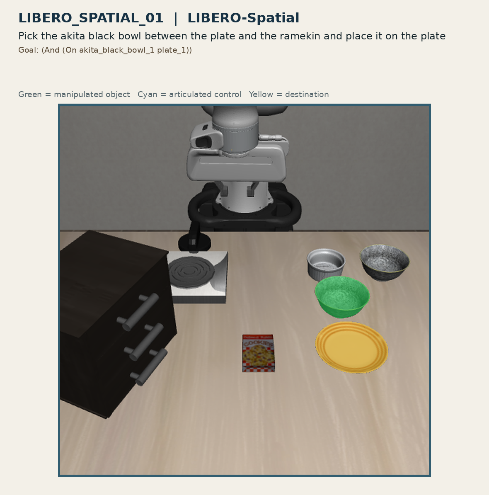
Goal / entities
Goal: (And (On akita_black_bowl_1 plate_1))
Fixtures: main_table - table; wooden_cabinet_1 - wooden_cabinet; flat_stove_1 - flat_stove
Objects: akita_black_bowl_1 akita_black_bowl_2 - akita_black_bowl; cookies_1 - cookies; glazed_rim_porcelain_ramekin_1 - glazed_rim_porcelain_ramekin; plate_1 - plate
BDDL: pick_up_the_black_bowl_between_the_plate_and_the_ramekin_and_place_it_on_the_plate.bddl
Mask pixels: {"goal_destination_02": 5559, "manipulated_object_01": 3289}
LIBERO_SPATIAL_02
LIBERO-Spatial
Pick the akita black bowl next to the ramekin and place it on the plate
Masked interaction: akita_black_bowl_1 (green); plate_1 (yellow)
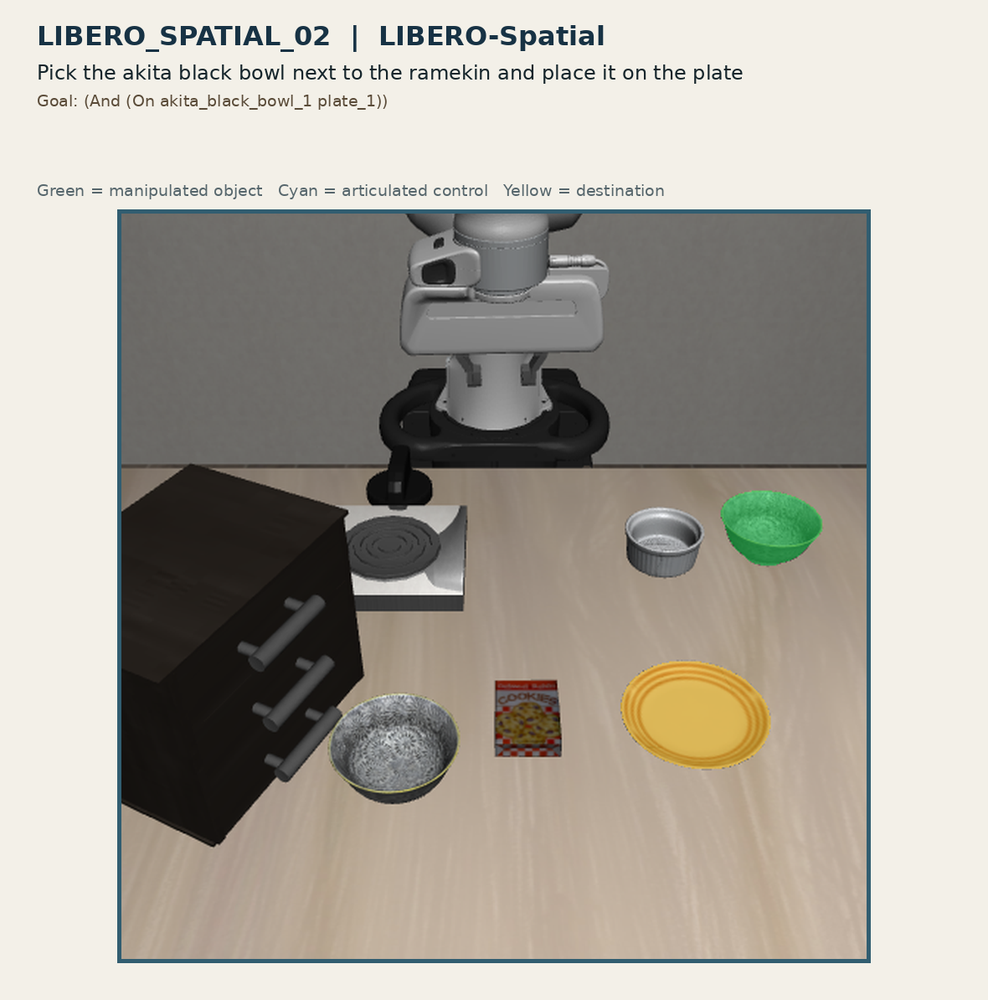
Goal / entities
Goal: (And (On akita_black_bowl_1 plate_1))
Fixtures: main_table - table; wooden_cabinet_1 - wooden_cabinet; flat_stove_1 - flat_stove
Objects: akita_black_bowl_1 akita_black_bowl_2 - akita_black_bowl; cookies_1 - cookies; glazed_rim_porcelain_ramekin_1 - glazed_rim_porcelain_ramekin; plate_1 - plate
BDDL: pick_up_the_black_bowl_next_to_the_ramekin_and_place_it_on_the_plate.bddl
Mask pixels: {"goal_destination_02": 5812, "manipulated_object_01": 2626}
LIBERO_SPATIAL_03
LIBERO-Spatial
Pick the akita black bowl from table center and place it on the plate
Masked interaction: akita_black_bowl_1 (green); plate_1 (yellow)
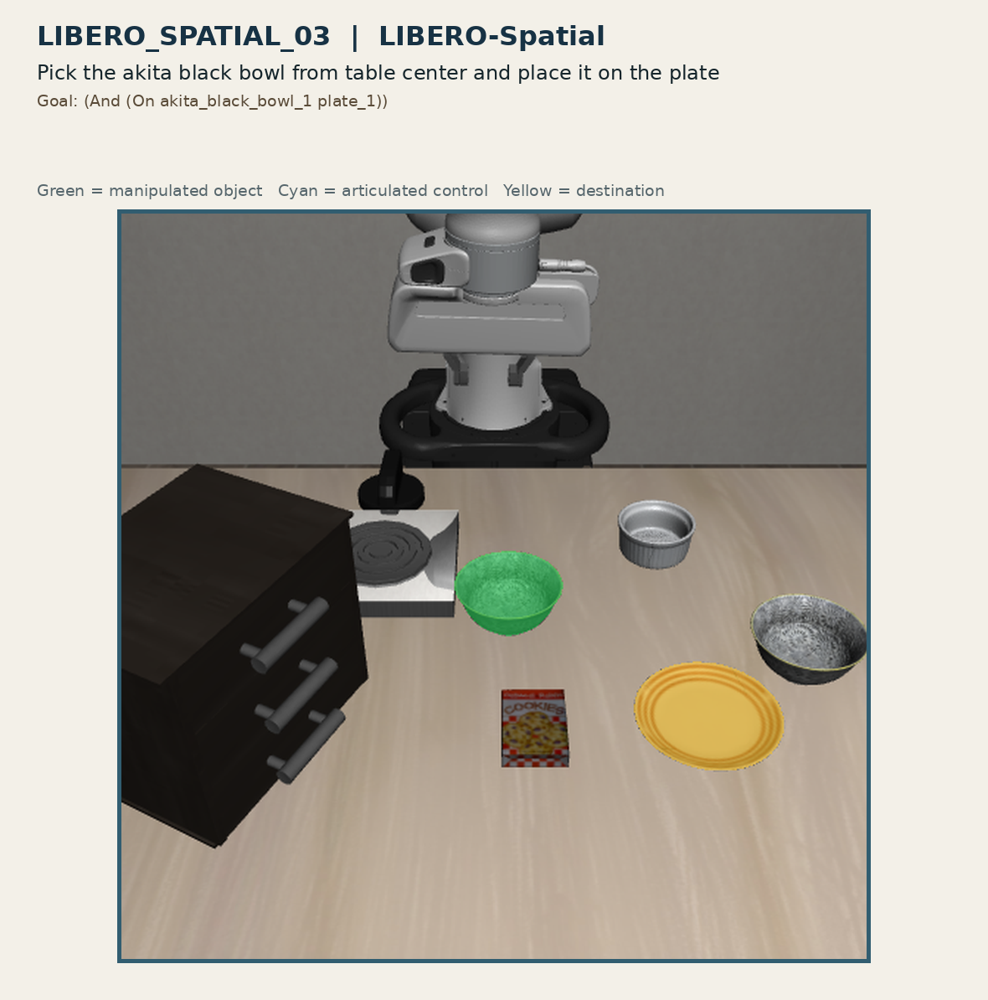
Goal / entities
Goal: (And (On akita_black_bowl_1 plate_1))
Fixtures: main_table - table; wooden_cabinet_1 - wooden_cabinet; flat_stove_1 - flat_stove
Objects: akita_black_bowl_1 akita_black_bowl_2 - akita_black_bowl; cookies_1 - cookies; glazed_rim_porcelain_ramekin_1 - glazed_rim_porcelain_ramekin; plate_1 - plate
BDDL: pick_up_the_black_bowl_from_table_center_and_place_it_on_the_plate.bddl
Mask pixels: {"goal_destination_02": 5843, "manipulated_object_01": 3173}
LIBERO_SPATIAL_04
LIBERO-Spatial
Pick the akita black bowl on the cookies box and place it on the plate
Masked interaction: akita_black_bowl_1 (green); plate_1 (yellow)
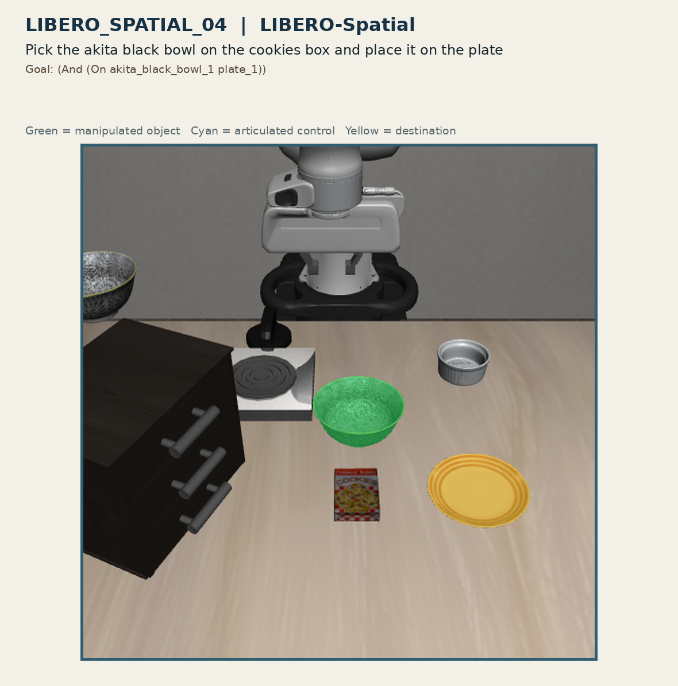
Goal / entities
Goal: (And (On akita_black_bowl_1 plate_1))
Fixtures: main_table - table; wooden_cabinet_1 - wooden_cabinet; flat_stove_1 - flat_stove
Objects: akita_black_bowl_1 akita_black_bowl_2 - akita_black_bowl; cookies_1 - cookies; glazed_rim_porcelain_ramekin_1 - glazed_rim_porcelain_ramekin; plate_1 - plate
BDDL: pick_up_the_black_bowl_on_the_cookie_box_and_place_it_on_the_plate.bddl
Mask pixels: {"goal_destination_02": 5811, "manipulated_object_01": 4843}
LIBERO_SPATIAL_05
LIBERO-Spatial
Pick the akita black bowl in the top layer of the wooden cabinet and place it on the plate
Masked interaction: akita_black_bowl_1 (green); plate_1 (yellow)
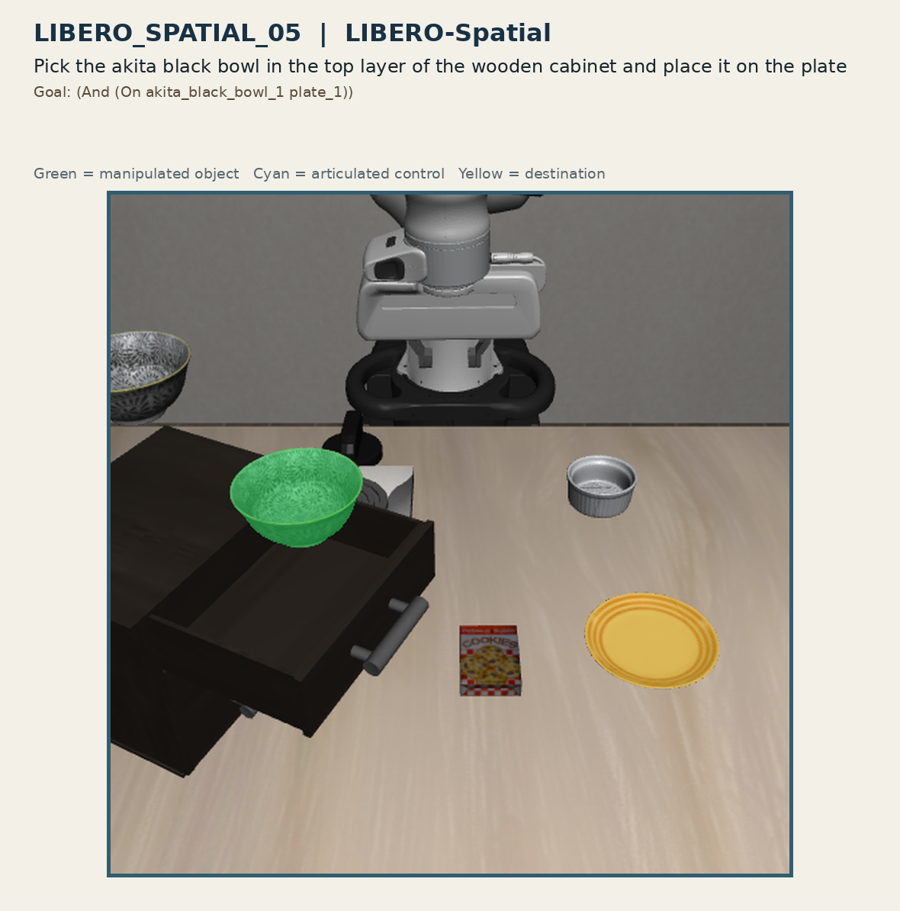
Goal / entities
Goal: (And (On akita_black_bowl_1 plate_1))
Fixtures: main_table - table; wooden_cabinet_1 - wooden_cabinet; flat_stove_1 - flat_stove
Objects: akita_black_bowl_1 akita_black_bowl_2 - akita_black_bowl; cookies_1 - cookies; glazed_rim_porcelain_ramekin_1 - glazed_rim_porcelain_ramekin; plate_1 - plate
BDDL: pick_up_the_black_bowl_in_the_top_drawer_of_the_wooden_cabinet_and_place_it_on_the_plate.bddl
Mask pixels: {"goal_destination_02": 5585, "manipulated_object_01": 5527}
LIBERO_SPATIAL_06
LIBERO-Spatial
Pick the akita black bowl on the ramekin and place it on the plate
Masked interaction: akita_black_bowl_1 (green); plate_1 (yellow)
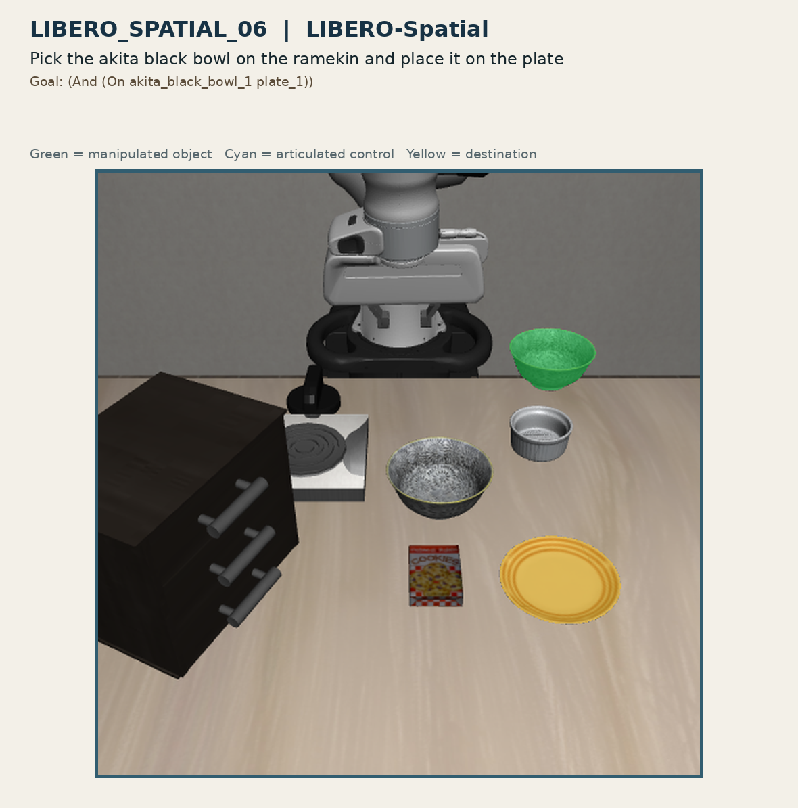
Goal / entities
Goal: (And (On akita_black_bowl_1 plate_1))
Fixtures: main_table - table; wooden_cabinet_1 - wooden_cabinet; flat_stove_1 - flat_stove
Objects: akita_black_bowl_1 akita_black_bowl_2 - akita_black_bowl; cookies_1 - cookies; glazed_rim_porcelain_ramekin_1 - glazed_rim_porcelain_ramekin; plate_1 - plate
BDDL: pick_up_the_black_bowl_on_the_ramekin_and_place_it_on_the_plate.bddl
Mask pixels: {"goal_destination_02": 5877, "manipulated_object_01": 2825}
LIBERO_SPATIAL_07
LIBERO-Spatial
Pick the akita black bowl next to the cookies box and place it on the plate
Masked interaction: akita_black_bowl_1 (green); plate_1 (yellow)
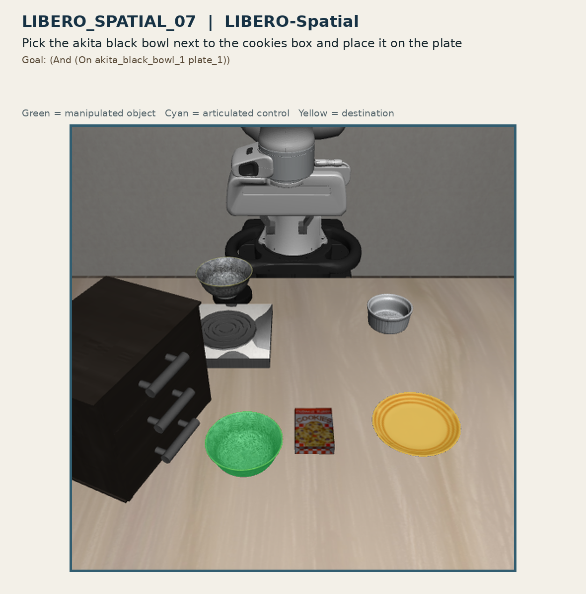
Goal / entities
Goal: (And (On akita_black_bowl_1 plate_1))
Fixtures: main_table - table; wooden_cabinet_1 - wooden_cabinet; flat_stove_1 - flat_stove
Objects: akita_black_bowl_1 akita_black_bowl_2 - akita_black_bowl; cookies_1 - cookies; glazed_rim_porcelain_ramekin_1 - glazed_rim_porcelain_ramekin; plate_1 - plate
BDDL: pick_up_the_black_bowl_next_to_the_cookie_box_and_place_it_on_the_plate.bddl
Mask pixels: {"goal_destination_02": 5809, "manipulated_object_01": 5128}
LIBERO_SPATIAL_08
LIBERO-Spatial
Pick the akita black bowl on the stove and place it on the plate
Masked interaction: akita_black_bowl_1 (green); plate_1 (yellow)
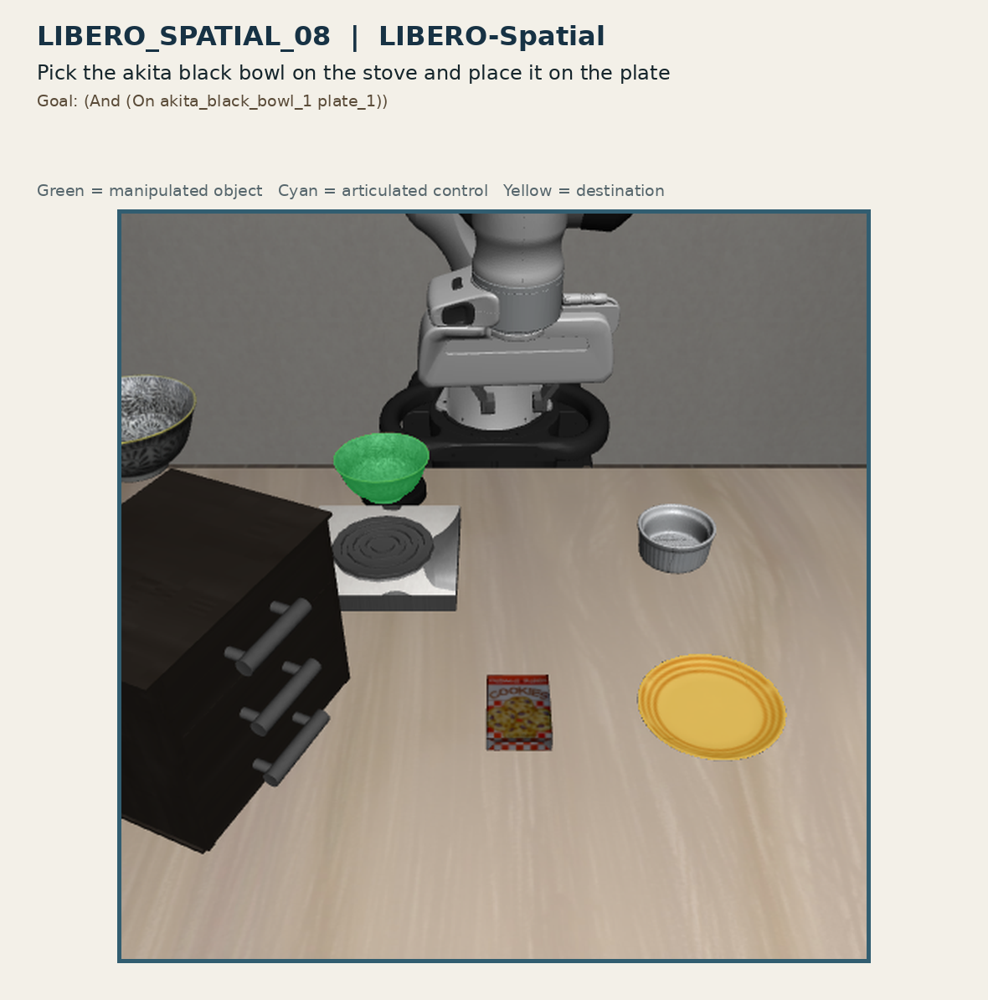
Goal / entities
Goal: (And (On akita_black_bowl_1 plate_1))
Fixtures: main_table - table; wooden_cabinet_1 - wooden_cabinet; flat_stove_1 - flat_stove
Objects: akita_black_bowl_1 akita_black_bowl_2 - akita_black_bowl; cookies_1 - cookies; glazed_rim_porcelain_ramekin_1 - glazed_rim_porcelain_ramekin; plate_1 - plate
BDDL: pick_up_the_black_bowl_on_the_stove_and_place_it_on_the_plate.bddl
Mask pixels: {"goal_destination_02": 5667, "manipulated_object_01": 2348}
LIBERO_SPATIAL_09
LIBERO-Spatial
Pick the akita black bowl next to the plate and place it on the plate
Masked interaction: akita_black_bowl_1 (green); plate_1 (yellow)
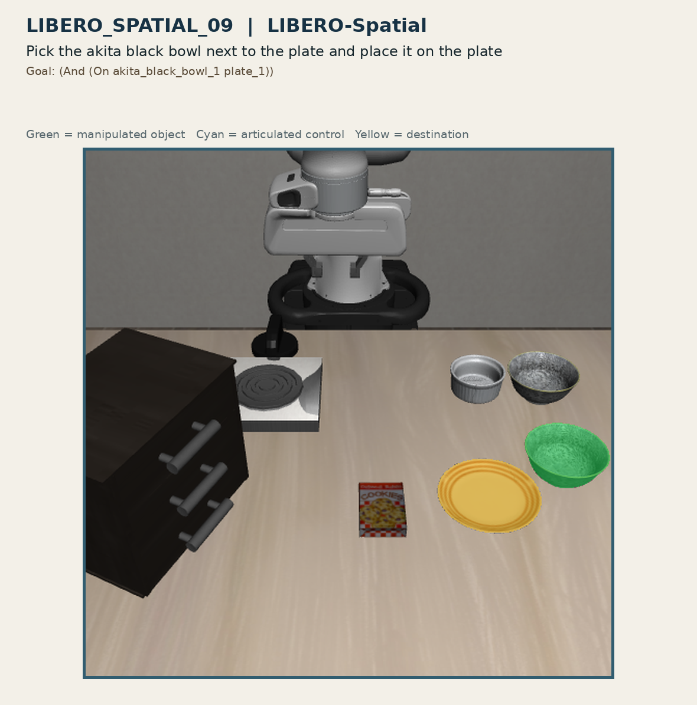
Goal / entities
Goal: (And (On akita_black_bowl_1 plate_1))
Fixtures: main_table - table; wooden_cabinet_1 - wooden_cabinet; flat_stove_1 - flat_stove
Objects: akita_black_bowl_1 akita_black_bowl_2 - akita_black_bowl; cookies_1 - cookies; glazed_rim_porcelain_ramekin_1 - glazed_rim_porcelain_ramekin; plate_1 - plate
BDDL: pick_up_the_black_bowl_next_to_the_plate_and_place_it_on_the_plate.bddl
Mask pixels: {"goal_destination_02": 5586, "manipulated_object_01": 3891}
LIBERO_SPATIAL_10
LIBERO-Spatial
Pick the akita black bowl on the wooden cabinet and place it on the plate
Masked interaction: akita_black_bowl_1 (green); plate_1 (yellow)
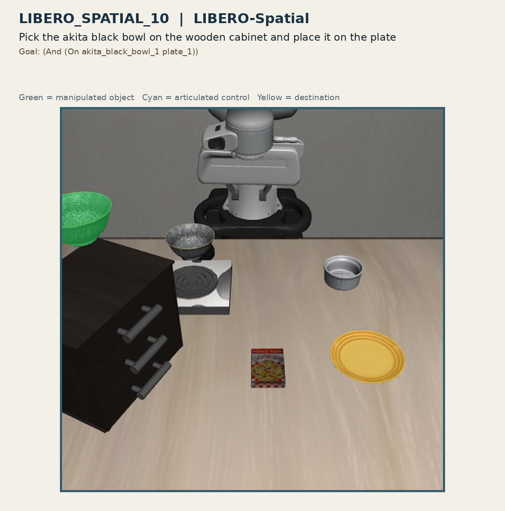
Goal / entities
Goal: (And (On akita_black_bowl_1 plate_1))
Fixtures: main_table - table; wooden_cabinet_1 - wooden_cabinet; flat_stove_1 - flat_stove
Objects: akita_black_bowl_1 akita_black_bowl_2 - akita_black_bowl; cookies_1 - cookies; glazed_rim_porcelain_ramekin_1 - glazed_rim_porcelain_ramekin; plate_1 - plate
BDDL: pick_up_the_black_bowl_on_the_wooden_cabinet_and_place_it_on_the_plate.bddl
Mask pixels: {"goal_destination_02": 5488, "manipulated_object_01": 4202}
LIBERO_OBJECT_01
LIBERO-Object
Pick the alphabet soup and place it in the basket
Masked interaction: alphabet_soup_1 (green); basket_1 (yellow)
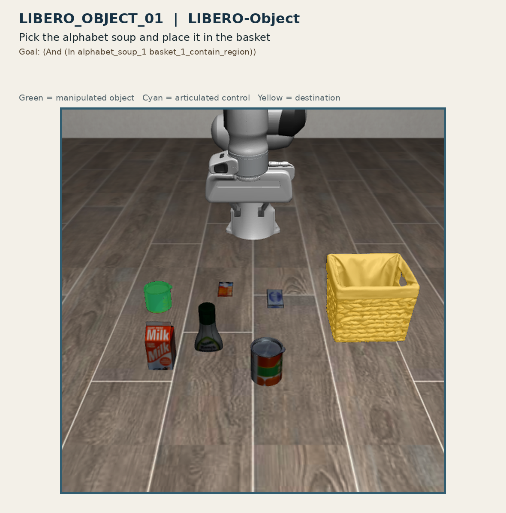
Goal / entities
Goal: (And (In alphabet_soup_1 basket_1_contain_region))
Fixtures: floor - floor
Objects: alphabet_soup_1 - alphabet_soup; basket_1 - basket; salad_dressing_1 - salad_dressing; cream_cheese_1 - cream_cheese; milk_1 - milk; tomato_sauce_1 - tomato_sauce; butter_1 - butter
BDDL: pick_up_the_alphabet_soup_and_place_it_in_the_basket.bddl
Mask pixels: {"goal_destination_02": 12811, "manipulated_object_01": 1326}
LIBERO_OBJECT_02
LIBERO-Object
Pick the cream cheese and place it in the basket
Masked interaction: cream_cheese_1 (green); basket_1 (yellow)
Goal / entities
Goal: (And (In cream_cheese_1 basket_1_contain_region))
Fixtures: floor - floor
Objects: cream_cheese_1 - cream_cheese; basket_1 - basket; alphabet_soup_1 - alphabet_soup; milk_1 - milk; tomato_sauce_1 - tomato_sauce; butter_1 - butter; orange_juice_1 - orange_juice
BDDL: pick_up_the_cream_cheese_and_place_it_in_the_basket.bddl
Mask pixels: {"goal_destination_02": 12368, "manipulated_object_01": 788}
LIBERO_OBJECT_03
LIBERO-Object
Pick the salad dressing and place it in the basket
Masked interaction: salad_dressing_1 (green); basket_1 (yellow)
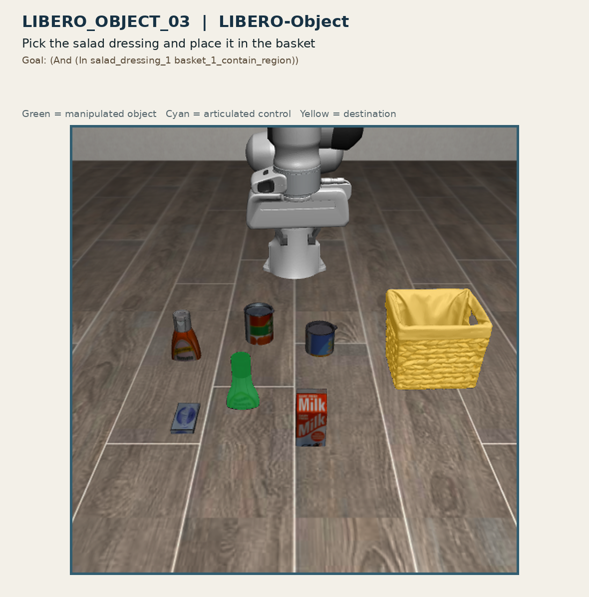
Goal / entities
Goal: (And (In salad_dressing_1 basket_1_contain_region))
Fixtures: floor - floor
Objects: salad_dressing_1 - salad_dressing; basket_1 - basket; ketchup_1 - ketchup; alphabet_soup_1 - alphabet_soup; cream_cheese_1 - cream_cheese; milk_1 - milk; tomato_sauce_1 - tomato_sauce
BDDL: pick_up_the_salad_dressing_and_place_it_in_the_basket.bddl
Mask pixels: {"goal_destination_02": 12279, "manipulated_object_01": 1712}
LIBERO_OBJECT_04
LIBERO-Object
Pick the bbq sauce and place it in the basket
Masked interaction: bbq_sauce_1 (green); basket_1 (yellow)
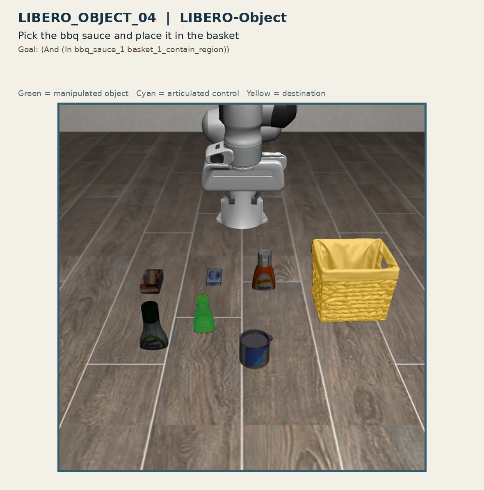
Goal / entities
Goal: (And (In bbq_sauce_1 basket_1_contain_region))
Fixtures: floor - floor
Objects: bbq_sauce_1 - bbq_sauce; basket_1 - basket; chocolate_pudding_1 - chocolate_pudding; ketchup_1 - ketchup; salad_dressing_1 - salad_dressing; alphabet_soup_1 - alphabet_soup; cream_cheese_1 - cream_cheese
BDDL: pick_up_the_bbq_sauce_and_place_it_in_the_basket.bddl
Mask pixels: {"goal_destination_02": 12392, "manipulated_object_01": 1189}
LIBERO_OBJECT_05
LIBERO-Object
Pick the ketchup and place it in the basket
Masked interaction: ketchup_1 (green); basket_1 (yellow)
Goal / entities
Goal: (And (In ketchup_1 basket_1_contain_region))
Fixtures: floor - floor
Objects: ketchup_1 - ketchup; basket_1 - basket; bbq_sauce_1 - bbq_sauce; salad_dressing_1 - salad_dressing; alphabet_soup_1 - alphabet_soup; cream_cheese_1 - cream_cheese; milk_1 - milk
BDDL: pick_up_the_ketchup_and_place_it_in_the_basket.bddl
Mask pixels: {"goal_destination_02": 12591, "manipulated_object_01": 1484}
LIBERO_OBJECT_06
LIBERO-Object
Pick the tomato sauce and place it in the basket
Masked interaction: tomato_sauce_1 (green); basket_1 (yellow)
Goal / entities
Goal: (And (In tomato_sauce_1 basket_1_contain_region))
Fixtures: floor - floor
Objects: tomato_sauce_1 - tomato_sauce; basket_1 - basket; milk_1 - milk; butter_1 - butter; orange_juice_1 - orange_juice; chocolate_pudding_1 - chocolate_pudding; bbq_sauce_1 - bbq_sauce
BDDL: pick_up_the_tomato_sauce_and_place_it_in_the_basket.bddl
Mask pixels: {"goal_destination_02": 12509, "manipulated_object_01": 2111}
LIBERO_OBJECT_07
LIBERO-Object
Pick the butter and place it in the basket
Masked interaction: butter_1 (green); basket_1 (yellow)
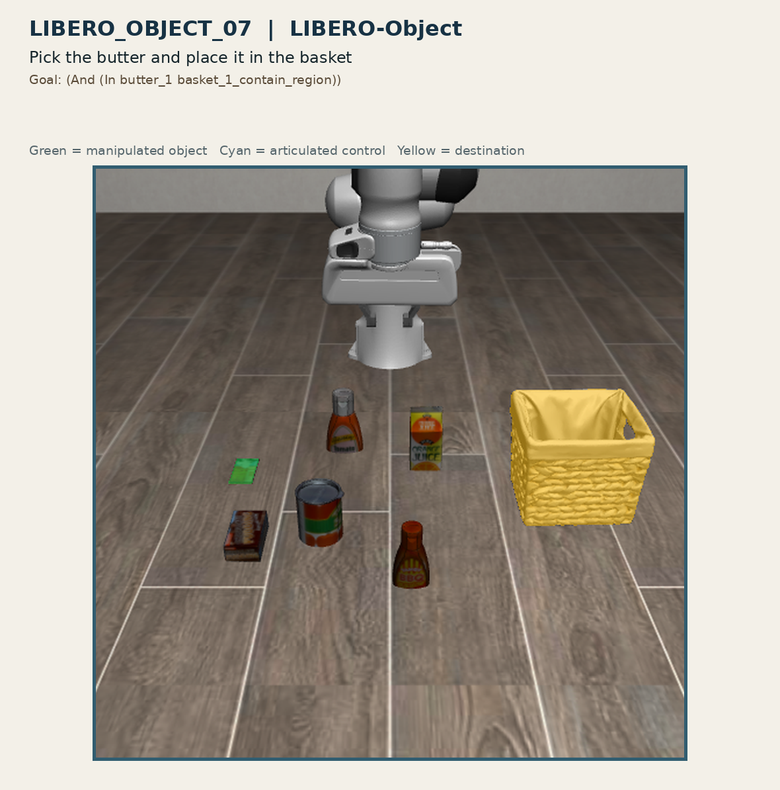
Goal / entities
Goal: (And (In butter_1 basket_1_contain_region))
Fixtures: floor - floor
Objects: butter_1 - butter; basket_1 - basket; tomato_sauce_1 - tomato_sauce; orange_juice_1 - orange_juice; chocolate_pudding_1 - chocolate_pudding; bbq_sauce_1 - bbq_sauce; ketchup_1 - ketchup
BDDL: pick_up_the_butter_and_place_it_in_the_basket.bddl
Mask pixels: {"goal_destination_02": 12828, "manipulated_object_01": 436}
LIBERO_OBJECT_08
LIBERO-Object
Pick the milk and place it in the basket
Masked interaction: milk_1 (green); basket_1 (yellow)
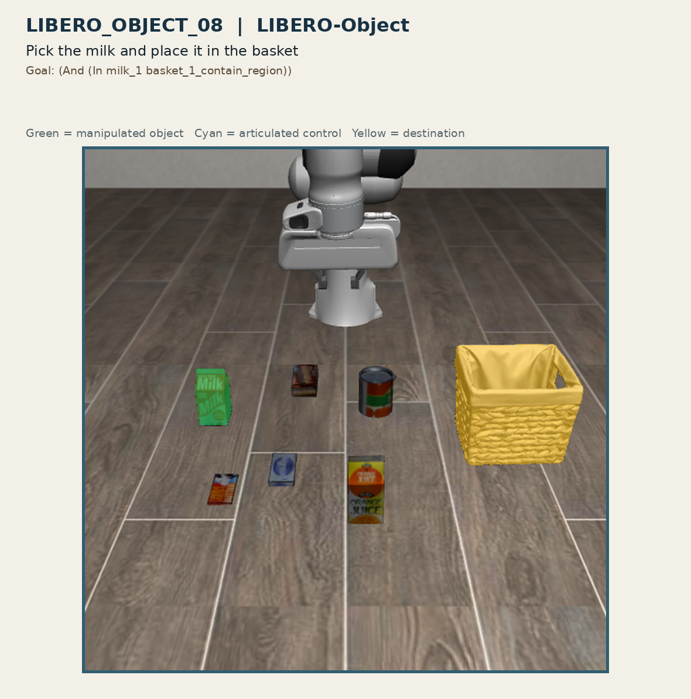
Goal / entities
Goal: (And (In milk_1 basket_1_contain_region))
Fixtures: floor - floor
Objects: milk_1 - milk; basket_1 - basket; cream_cheese_1 - cream_cheese; tomato_sauce_1 - tomato_sauce; butter_1 - butter; orange_juice_1 - orange_juice; chocolate_pudding_1 - chocolate_pudding
BDDL: pick_up_the_milk_and_place_it_in_the_basket.bddl
Mask pixels: {"goal_destination_02": 12839, "manipulated_object_01": 1745}
LIBERO_OBJECT_09
LIBERO-Object
Pick the chocolate pudding and place it in the basket
Masked interaction: chocolate_pudding_1 (green); basket_1 (yellow)
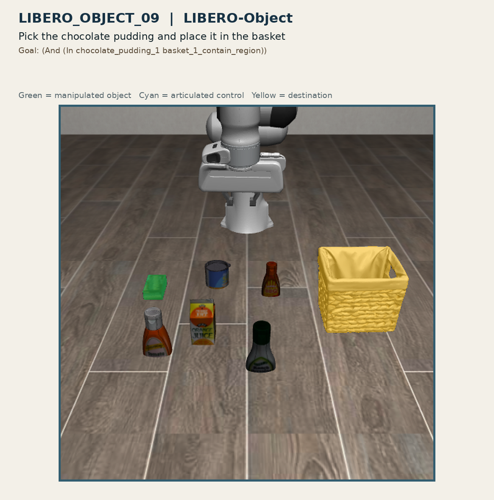
Goal / entities
Goal: (And (In chocolate_pudding_1 basket_1_contain_region))
Fixtures: floor - floor
Objects: chocolate_pudding_1 - chocolate_pudding; basket_1 - basket; orange_juice_1 - orange_juice; bbq_sauce_1 - bbq_sauce; ketchup_1 - ketchup; salad_dressing_1 - salad_dressing; alphabet_soup_1 - alphabet_soup
BDDL: pick_up_the_chocolate_pudding_and_place_it_in_the_basket.bddl
Mask pixels: {"goal_destination_02": 12757, "manipulated_object_01": 953}
LIBERO_OBJECT_10
LIBERO-Object
Pick the orange juice and place it in the basket
Masked interaction: orange_juice_1 (green); basket_1 (yellow)
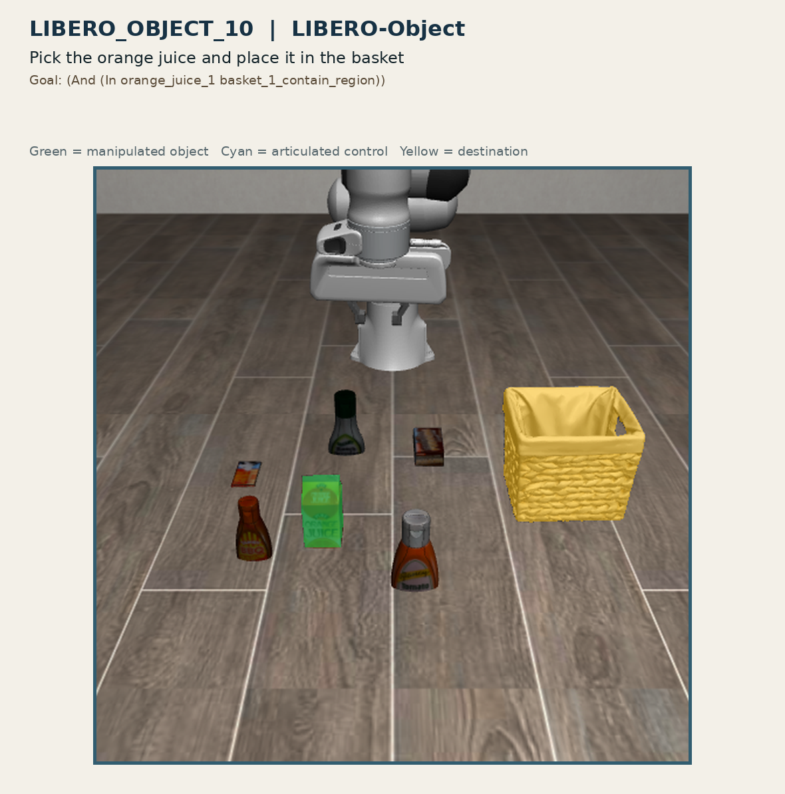
Goal / entities
Goal: (And (In orange_juice_1 basket_1_contain_region))
Fixtures: floor - floor
Objects: orange_juice_1 - orange_juice; basket_1 - basket; butter_1 - butter; chocolate_pudding_1 - chocolate_pudding; bbq_sauce_1 - bbq_sauce; ketchup_1 - ketchup; salad_dressing_1 - salad_dressing
BDDL: pick_up_the_orange_juice_and_place_it_in_the_basket.bddl
Mask pixels: {"goal_destination_02": 12375, "manipulated_object_01": 2086}
LIBERO_GOAL_01
LIBERO-Goal
Open the middle layer of the drawer
Masked interaction: middle drawer of wooden_cabinet_1 (cyan)
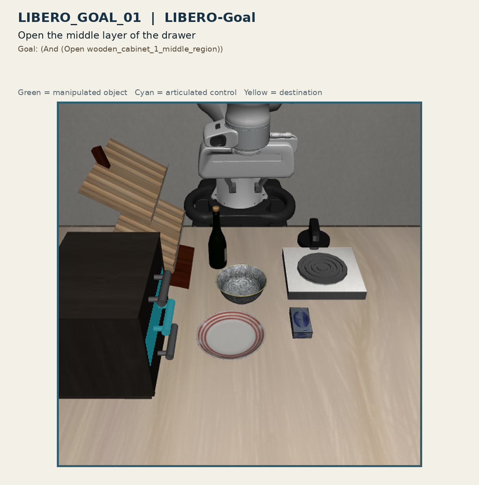
Goal / entities
Goal: (And (Open wooden_cabinet_1_middle_region))
Fixtures: main_table - table; wooden_cabinet_1 - wooden_cabinet; flat_stove_1 - flat_stove; wine_rack_1 - wine_rack
Objects: akita_black_bowl_1 - akita_black_bowl; cream_cheese_1 - cream_cheese; wine_bottle_1 - wine_bottle; plate_1 - plate
BDDL: open_the_middle_drawer_of_the_cabinet.bddl
Mask pixels: {"interaction_control_01": 1763}
LIBERO_GOAL_02
LIBERO-Goal
Put the bowl on the stove
Masked interaction: akita_black_bowl_1 (green); flat_stove_1 (yellow)
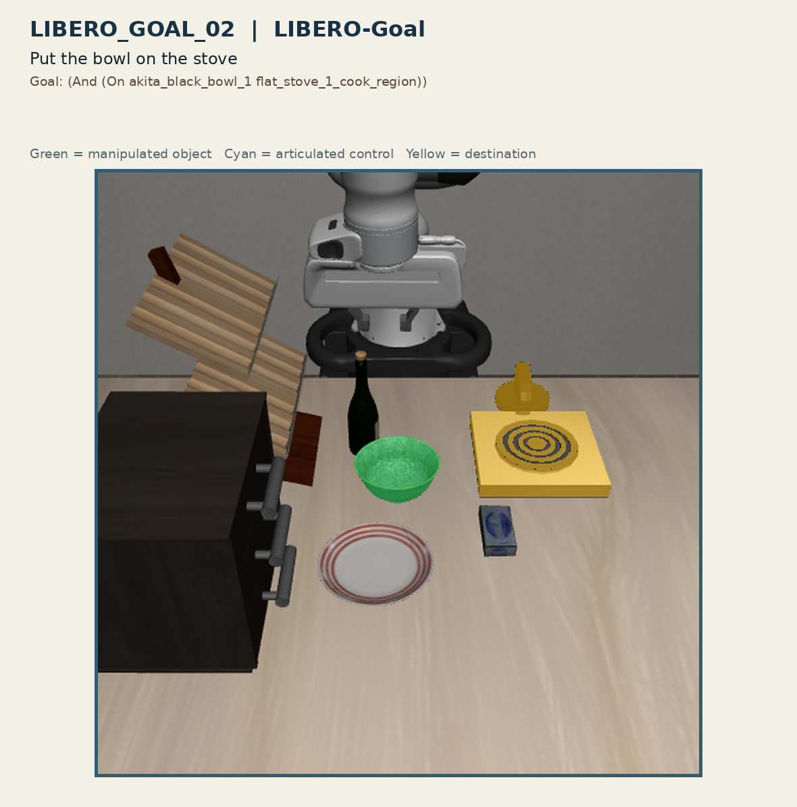
Goal / entities
Goal: (And (On akita_black_bowl_1 flat_stove_1_cook_region))
Fixtures: main_table - table; wooden_cabinet_1 - wooden_cabinet; flat_stove_1 - flat_stove; wine_rack_1 - wine_rack
Objects: akita_black_bowl_1 - akita_black_bowl; cream_cheese_1 - cream_cheese; wine_bottle_1 - wine_bottle; plate_1 - plate
BDDL: put_the_bowl_on_the_stove.bddl
Mask pixels: {"goal_destination_02": 8194, "manipulated_object_01": 3055}
LIBERO_GOAL_03
LIBERO-Goal
Put the wine bottle on the top of the drawer
Masked interaction: wine_bottle_1 (green); wooden_cabinet_1 (yellow)
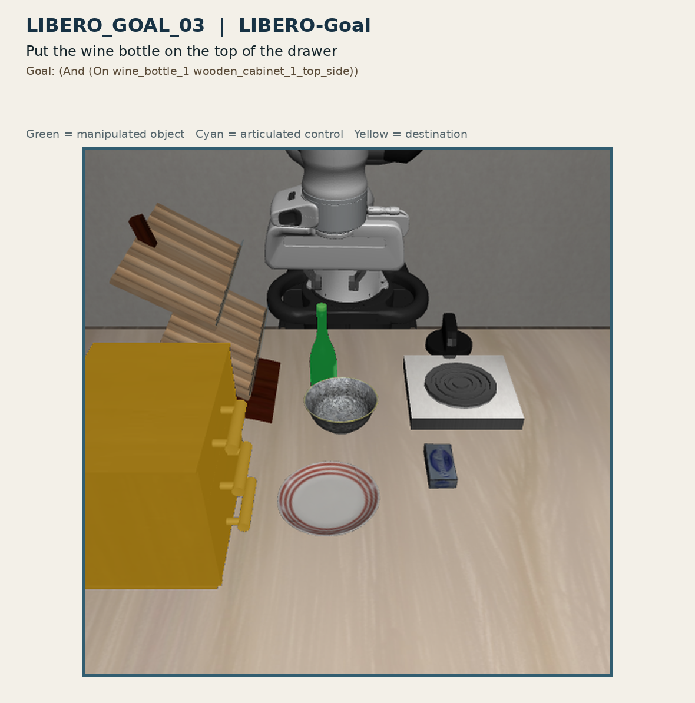
Goal / entities
Goal: (And (On wine_bottle_1 wooden_cabinet_1_top_side))
Fixtures: main_table - table; wooden_cabinet_1 - wooden_cabinet; flat_stove_1 - flat_stove; wine_rack_1 - wine_rack
Objects: akita_black_bowl_1 - akita_black_bowl; cream_cheese_1 - cream_cheese; wine_bottle_1 - wine_bottle; plate_1 - plate
BDDL: put_the_wine_bottle_on_top_of_the_cabinet.bddl
Mask pixels: {"goal_destination_02": 35934, "manipulated_object_01": 1271}
LIBERO_GOAL_04
LIBERO-Goal
Open the top layer of the drawer and put the bowl inside
Masked interaction: akita_black_bowl_1 (green); top drawer of wooden_cabinet_1 (cyan)
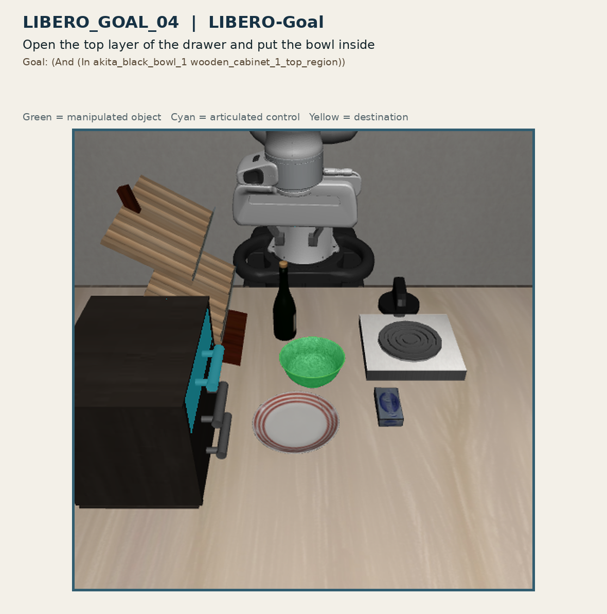
Goal / entities
Goal: (And (In akita_black_bowl_1 wooden_cabinet_1_top_region))
Fixtures: main_table - table; wooden_cabinet_1 - wooden_cabinet; flat_stove_1 - flat_stove; wine_rack_1 - wine_rack
Objects: akita_black_bowl_1 - akita_black_bowl; cream_cheese_1 - cream_cheese; wine_bottle_1 - wine_bottle; plate_1 - plate
BDDL: open_the_top_drawer_and_put_the_bowl_inside.bddl
Mask pixels: {"articulated_destination_02": 2239, "manipulated_object_01": 3136}
LIBERO_GOAL_05
LIBERO-Goal
Put the bowl on the top of the drawer
Masked interaction: akita_black_bowl_1 (green); wooden_cabinet_1 (yellow)
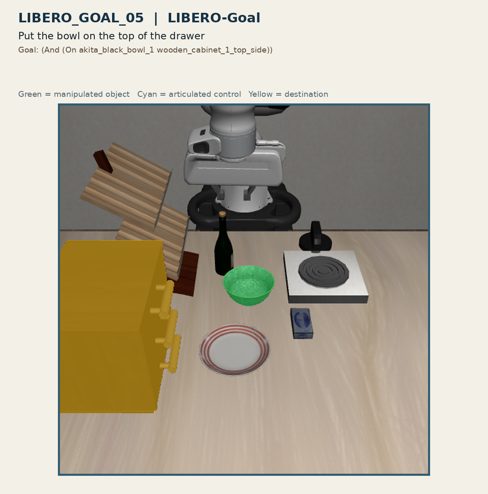
Goal / entities
Goal: (And (On akita_black_bowl_1 wooden_cabinet_1_top_side))
Fixtures: main_table - table; wooden_cabinet_1 - wooden_cabinet; flat_stove_1 - flat_stove; wine_rack_1 - wine_rack
Objects: akita_black_bowl_1 - akita_black_bowl; cream_cheese_1 - cream_cheese; wine_bottle_1 - wine_bottle; plate_1 - plate
BDDL: put_the_bowl_on_top_of_the_cabinet.bddl
Mask pixels: {"goal_destination_02": 36203, "manipulated_object_01": 3015}
LIBERO_GOAL_06
LIBERO-Goal
Push the plate to the front of the stove
Masked interaction: plate_1 (green); main_table_stove_front_region (yellow)
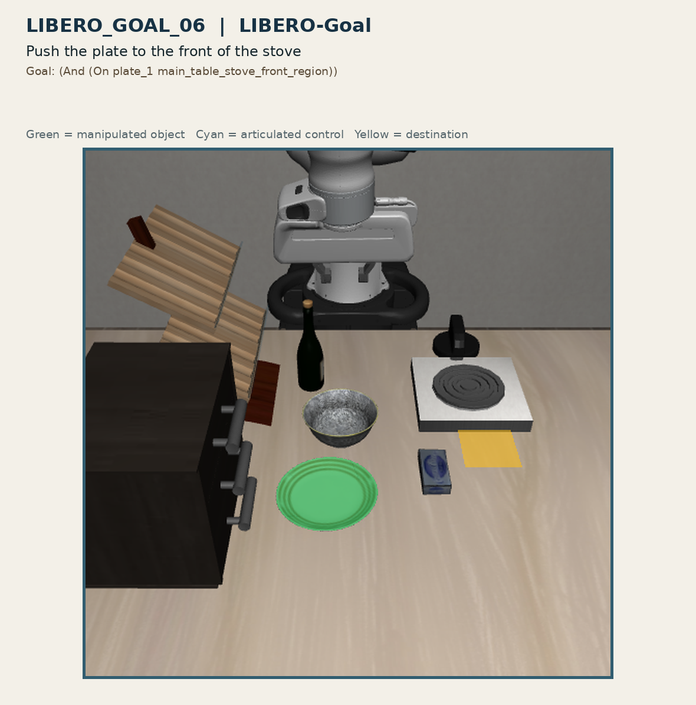
Goal / entities
Goal: (And (On plate_1 main_table_stove_front_region))
Fixtures: main_table - table; wooden_cabinet_1 - wooden_cabinet; flat_stove_1 - flat_stove; wine_rack_1 - wine_rack
Objects: akita_black_bowl_1 - akita_black_bowl; cream_cheese_1 - cream_cheese; wine_bottle_1 - wine_bottle; plate_1 - plate
BDDL: push_the_plate_to_the_front_of_the_stove.bddl
Mask pixels: {"goal_destination_02": 1908, "manipulated_object_01": 5484}
LIBERO_GOAL_07
LIBERO-Goal
Put the cream cheese on the bowl
Masked interaction: cream_cheese_1 (green); akita_black_bowl_1 (yellow)
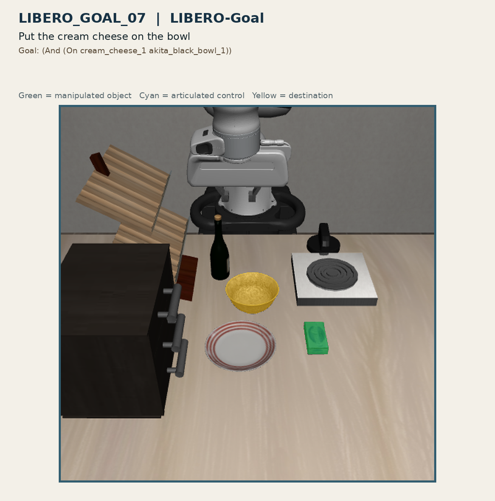
Goal / entities
Goal: (And (On cream_cheese_1 akita_black_bowl_1))
Fixtures: main_table - table; wooden_cabinet_1 - wooden_cabinet; flat_stove_1 - flat_stove; wine_rack_1 - wine_rack
Objects: akita_black_bowl_1 - akita_black_bowl; cream_cheese_1 - cream_cheese; wine_bottle_1 - wine_bottle; plate_1 - plate
BDDL: put_the_cream_cheese_in_the_bowl.bddl
Mask pixels: {"goal_destination_02": 3078, "manipulated_object_01": 1249}
LIBERO_GOAL_08
LIBERO-Goal
Turn on the stove
Masked interaction: flat_stove_1_button (cyan)
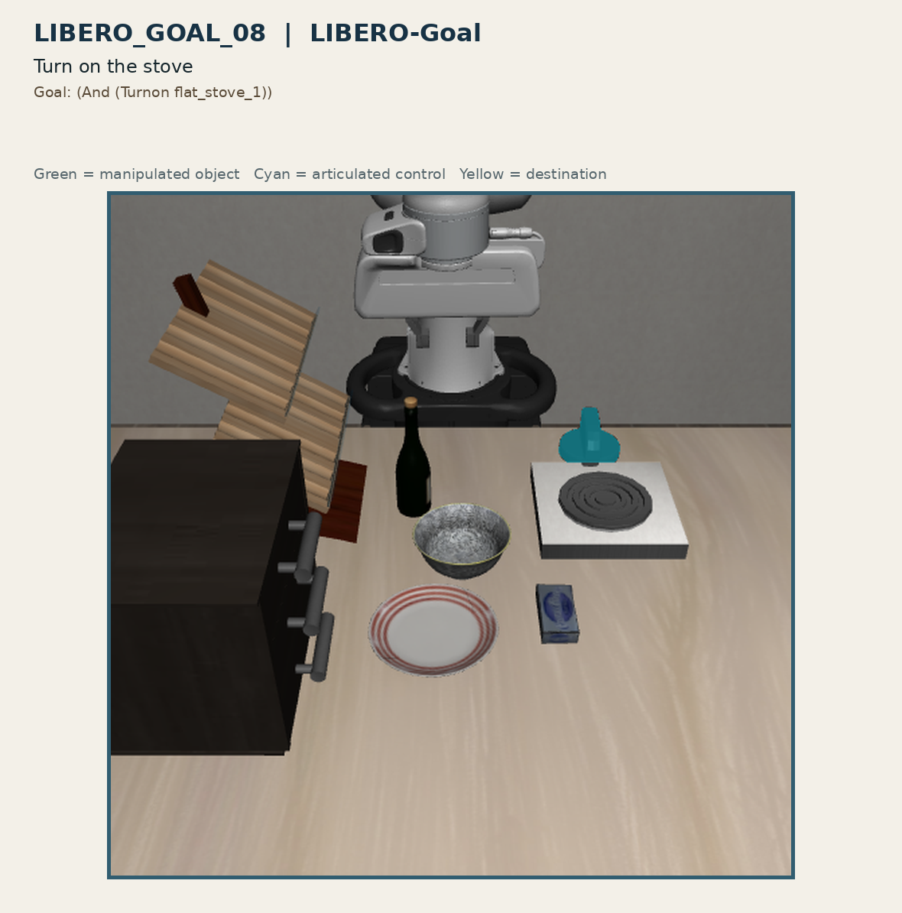
Goal / entities
Goal: (And (Turnon flat_stove_1))
Fixtures: main_table - table; wooden_cabinet_1 - wooden_cabinet; flat_stove_1 - flat_stove; wine_rack_1 - wine_rack
Objects: akita_black_bowl_1 - akita_black_bowl; cream_cheese_1 - cream_cheese; wine_bottle_1 - wine_bottle; plate_1 - plate
BDDL: turn_on_the_stove.bddl
Mask pixels: {"interaction_control_01": 1216}
LIBERO_GOAL_09
LIBERO-Goal
Put the bowl on the plate
Masked interaction: akita_black_bowl_1 (green); plate_1 (yellow)
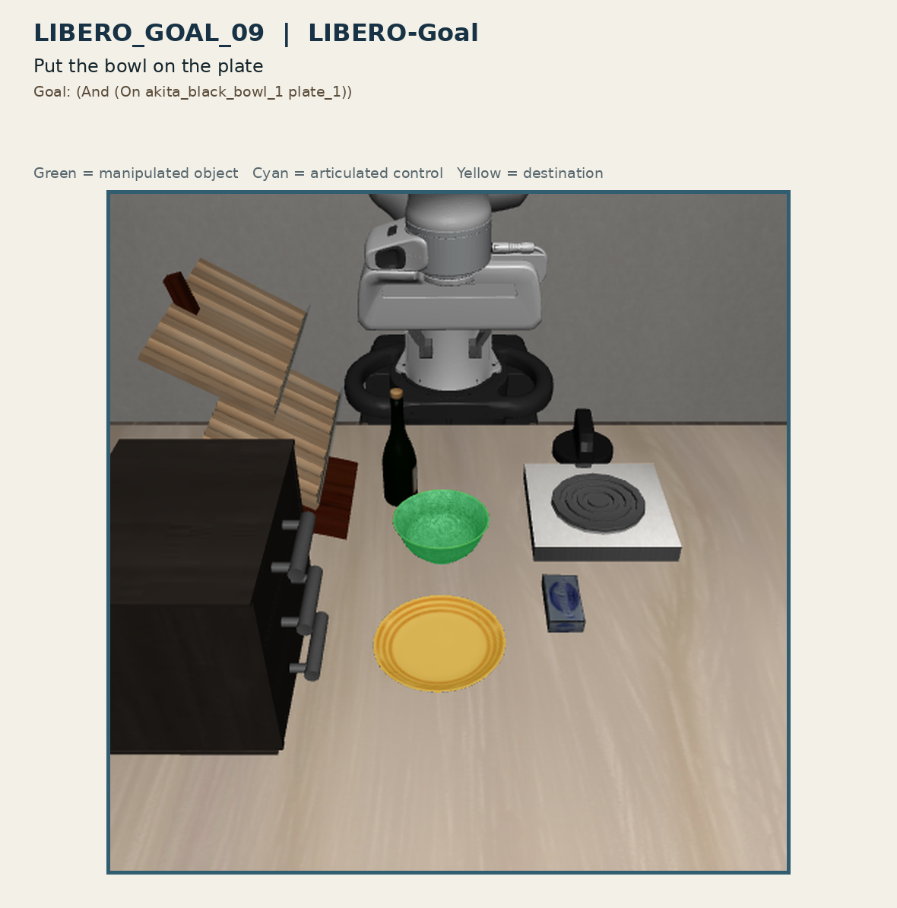
Goal / entities
Goal: (And (On akita_black_bowl_1 plate_1))
Fixtures: main_table - table; wooden_cabinet_1 - wooden_cabinet; flat_stove_1 - flat_stove; wine_rack_1 - wine_rack
Objects: akita_black_bowl_1 - akita_black_bowl; cream_cheese_1 - cream_cheese; wine_bottle_1 - wine_bottle; plate_1 - plate
BDDL: put_the_bowl_on_the_plate.bddl
Mask pixels: {"goal_destination_02": 5647, "manipulated_object_01": 3037}
LIBERO_GOAL_10
LIBERO-Goal
Put the wine bottle on the rack
Masked interaction: wine_bottle_1 (green); wine_rack_1 (yellow)
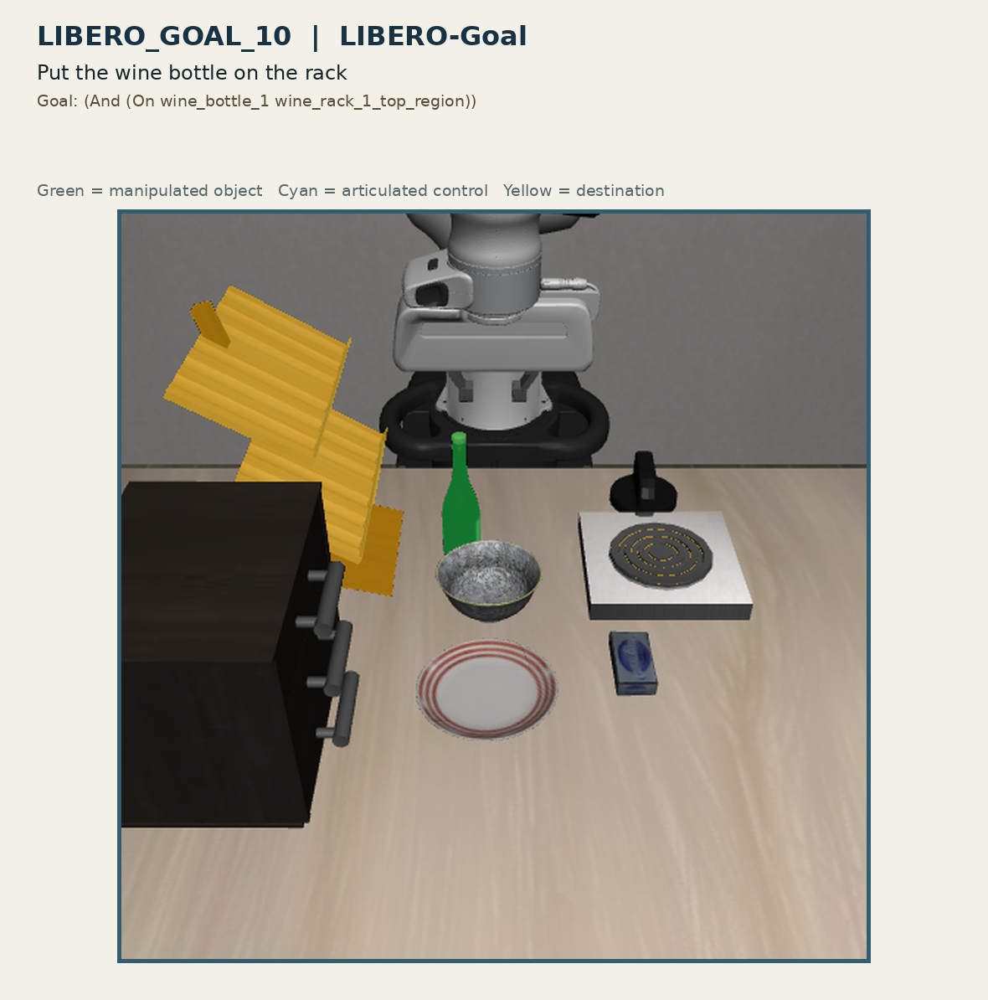
Goal / entities
Goal: (And (On wine_bottle_1 wine_rack_1_top_region))
Fixtures: main_table - table; wooden_cabinet_1 - wooden_cabinet; flat_stove_1 - flat_stove; wine_rack_1 - wine_rack
Objects: akita_black_bowl_1 - akita_black_bowl; cream_cheese_1 - cream_cheese; wine_bottle_1 - wine_bottle; plate_1 - plate
BDDL: put_the_wine_bottle_on_the_rack.bddl
Mask pixels: {"goal_destination_02": 15170, "manipulated_object_01": 1337}
LIBERO_10_01
LIBERO-10 (Long-Horizon)
put both the alphabet soup and the tomato sauce in the basket
Masked interaction: alphabet_soup_1 (green); basket_1 (yellow); tomato_sauce_1 (green)
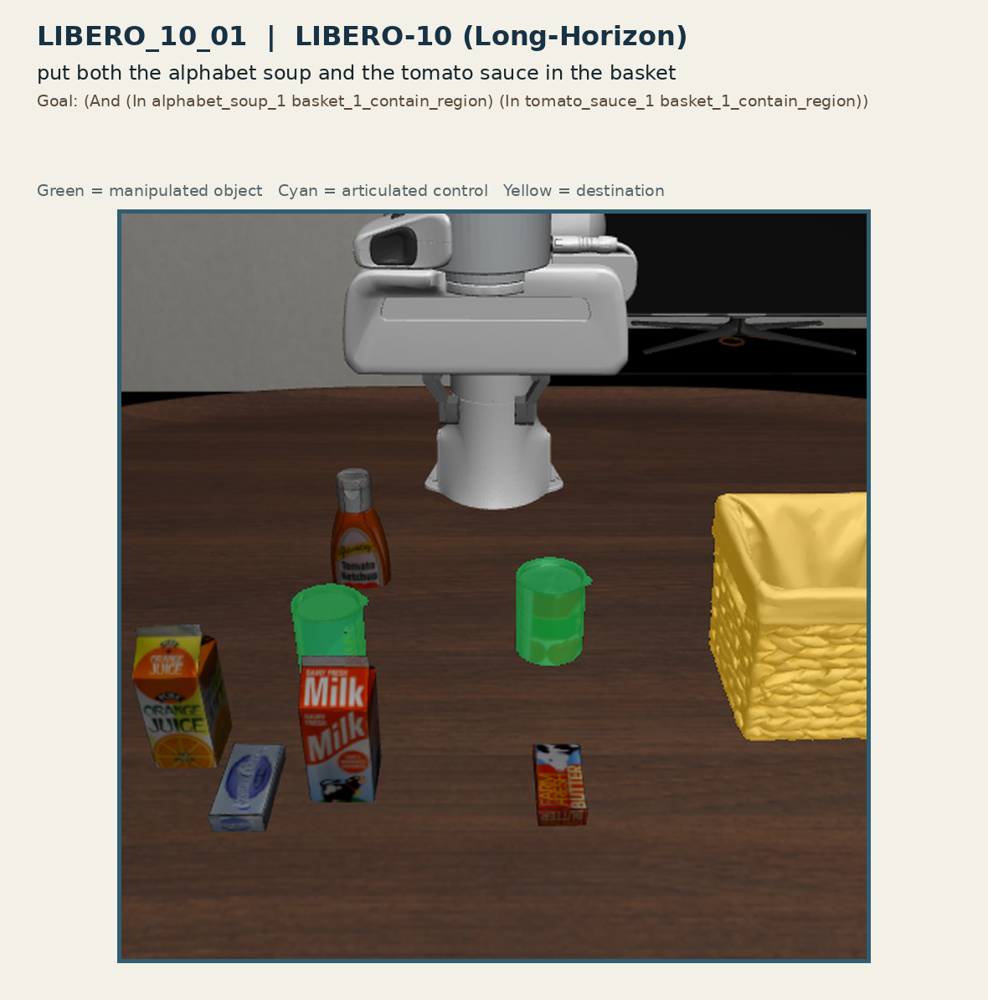
Goal / entities
Goal: (And (In alphabet_soup_1 basket_1_contain_region) (In tomato_sauce_1 basket_1_contain_region))
Fixtures: living_room_table - living_room_table
Objects: alphabet_soup_1 - alphabet_soup; cream_cheese_1 - cream_cheese; tomato_sauce_1 - tomato_sauce; ketchup_1 - ketchup; orange_juice_1 - orange_juice; milk_1 - milk; butter_1 - butter; basket_1 - basket
BDDL: LIVING_ROOM_SCENE2_put_both_the_alphabet_soup_and_the_tomato_sauce_in_the_basket.bddl
Mask pixels: {"goal_destination_02": 17364, "manipulated_object_01": 2242, "manipulated_object_03": 3197}
LIBERO_10_02
LIBERO-10 (Long-Horizon)
put both the cream cheese box and the butter in the basket
Masked interaction: cream_cheese_1 (green); basket_1 (yellow); butter_1 (green)
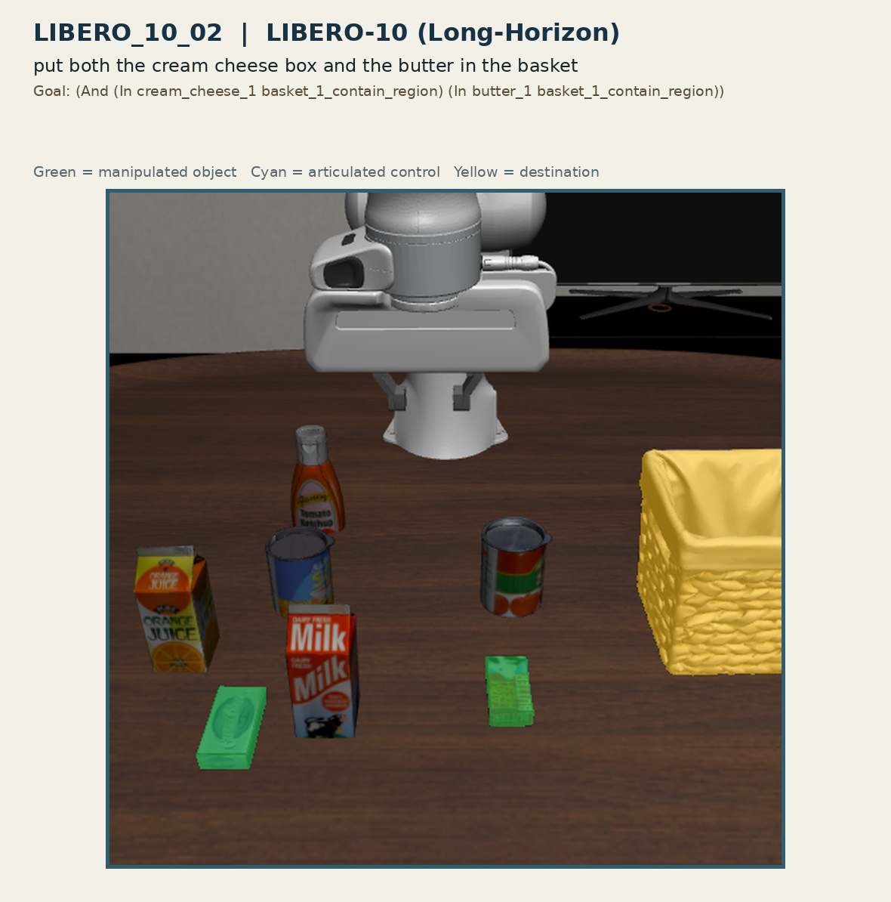
Goal / entities
Goal: (And (In cream_cheese_1 basket_1_contain_region) (In butter_1 basket_1_contain_region))
Fixtures: living_room_table - living_room_table
Objects: alphabet_soup_1 - alphabet_soup; cream_cheese_1 - cream_cheese; tomato_sauce_1 - tomato_sauce; ketchup_1 - ketchup; orange_juice_1 - orange_juice; milk_1 - milk; butter_1 - butter; basket_1 - basket
BDDL: LIVING_ROOM_SCENE2_put_both_the_cream_cheese_box_and_the_butter_in_the_basket.bddl
Mask pixels: {"goal_destination_02": 17862, "manipulated_object_01": 2513, "manipulated_object_03": 1731}
LIBERO_10_03
LIBERO-10 (Long-Horizon)
turn on the stove and put the moka pot on it
Masked interaction: flat_stove_1_button (cyan); moka_pot_1 (green); flat_stove_1 (yellow)
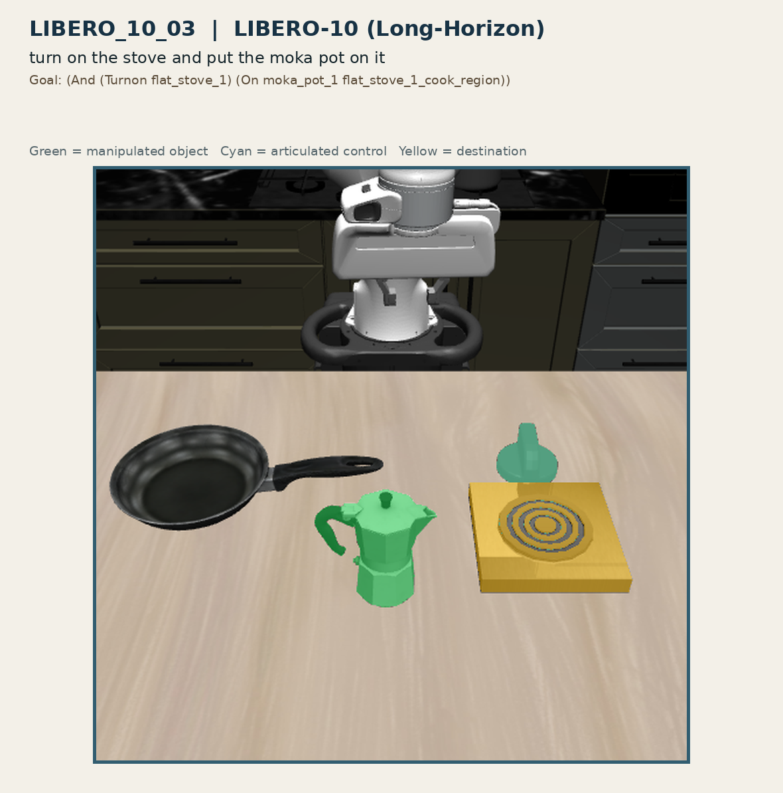
Goal / entities
Goal: (And (Turnon flat_stove_1) (On moka_pot_1 flat_stove_1_cook_region))
Fixtures: kitchen_table - kitchen_table; flat_stove_1 - flat_stove
Objects: chefmate_8_frypan_1 - chefmate_8_frypan; moka_pot_1 - moka_pot
BDDL: KITCHEN_SCENE3_turn_on_the_stove_and_put_the_moka_pot_on_it.bddl
Mask pixels: {"goal_destination_03": 12350, "interaction_control_01": 1854, "manipulated_object_02": 5659}
LIBERO_10_04
LIBERO-10 (Long-Horizon)
put the black bowl in the bottom drawer of the cabinet and close it
Masked interaction: bottom drawer of white_cabinet_1 (cyan); akita_black_bowl_1 (green)
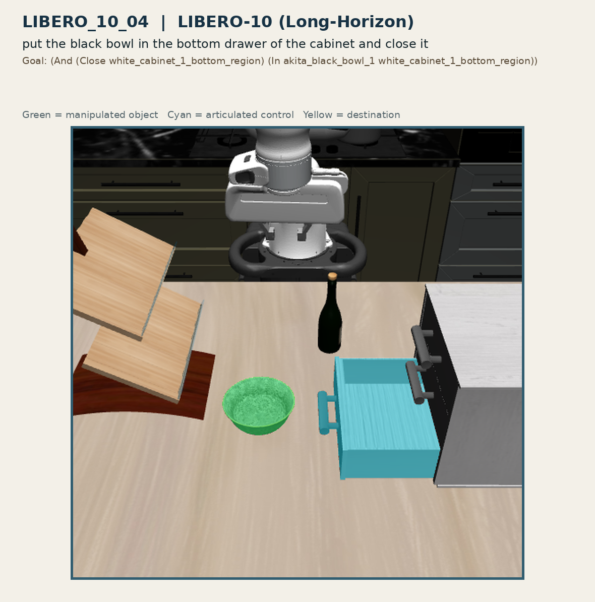
Goal / entities
Goal: (And (Close white_cabinet_1_bottom_region) (In akita_black_bowl_1 white_cabinet_1_bottom_region))
Fixtures: kitchen_table - kitchen_table; white_cabinet_1 - white_cabinet; wine_rack_1 - wine_rack
Objects: akita_black_bowl_1 - akita_black_bowl; wine_bottle_1 - wine_bottle
BDDL: KITCHEN_SCENE4_put_the_black_bowl_in_the_bottom_drawer_of_the_cabinet_and_close_it.bddl
Mask pixels: {"interaction_control_01": 14374, "manipulated_object_02": 4104}
LIBERO_10_05
LIBERO-10 (Long-Horizon)
put the white mug on the left plate and put the yellow and white mug on the right plate
Masked interaction: porcelain_mug_1 (green); plate_1 (yellow); white_yellow_mug_1 (green); plate_2 (yellow)
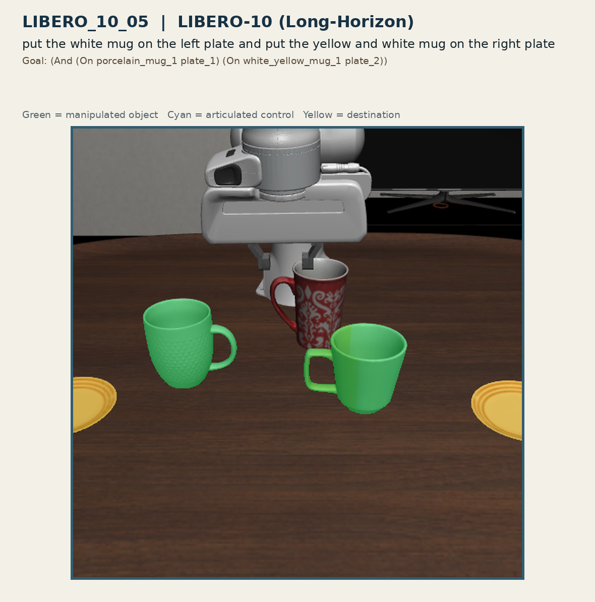
Goal / entities
Goal: (And (On porcelain_mug_1 plate_1) (On white_yellow_mug_1 plate_2))
Fixtures: living_room_table - living_room_table
Objects: porcelain_mug_1 - porcelain_mug; red_coffee_mug_1 - red_coffee_mug; white_yellow_mug_1 - white_yellow_mug; plate_1 plate_2 - plate
BDDL: LIVING_ROOM_SCENE5_put_the_white_mug_on_the_left_plate_and_put_the_yellow_and_white_mug_on_the_right_plate.bddl
Mask pixels: {"goal_destination_02": 2528, "goal_destination_04": 3171, "manipulated_object_01": 7131, "manipulated_object_03": 7675}
LIBERO_10_06
LIBERO-10 (Long-Horizon)
pick up the book and place it in the back compartment of the caddy
Masked interaction: black_book_1 (green); desk_caddy_1 (yellow)
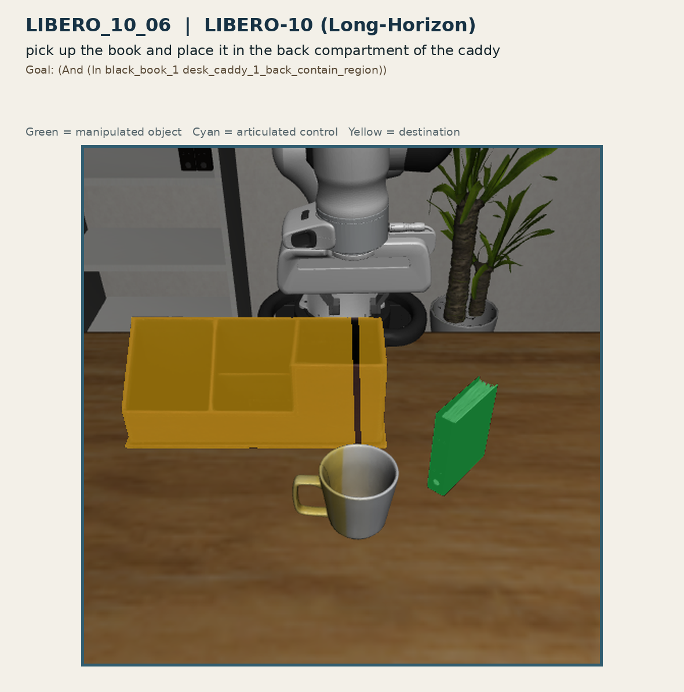
Goal / entities
Goal: (And (In black_book_1 desk_caddy_1_back_contain_region))
Fixtures: study_table - study_table; desk_caddy_1 - desk_caddy
Objects: black_book_1 - black_book; white_yellow_mug_1 - white_yellow_mug
BDDL: STUDY_SCENE1_pick_up_the_book_and_place_it_in_the_back_compartment_of_the_caddy.bddl
Mask pixels: {"goal_destination_02": 31826, "manipulated_object_01": 4762}
LIBERO_10_07
LIBERO-10 (Long-Horizon)
put the white mug on the plate and put the chocolate pudding to the right of the plate
Masked interaction: porcelain_mug_1 (green); plate_1 (yellow); chocolate_pudding_1 (green); living_room_table_plate_right_region (yellow)
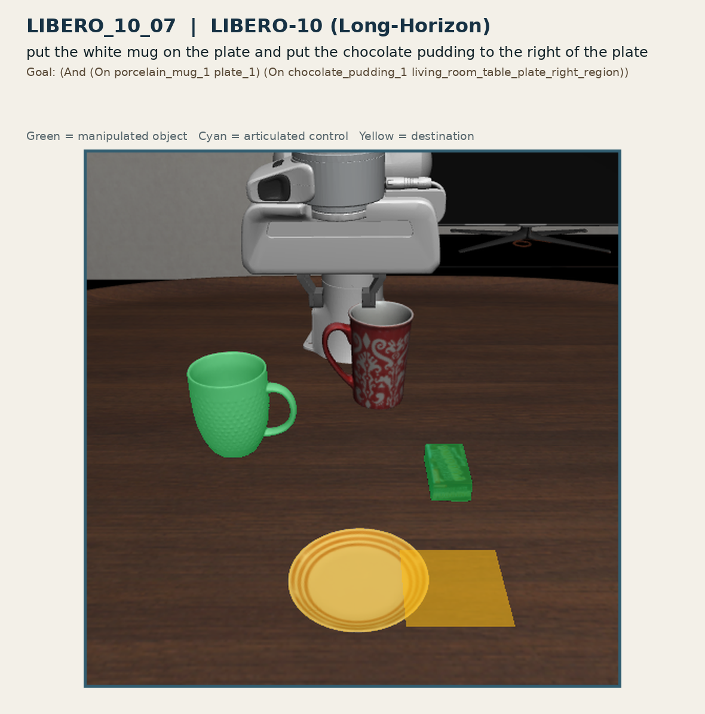
Goal / entities
Goal: (And (On porcelain_mug_1 plate_1) (On chocolate_pudding_1 living_room_table_plate_right_region))
Fixtures: living_room_table - living_room_table
Objects: porcelain_mug_1 - porcelain_mug; red_coffee_mug_1 - red_coffee_mug; plate_1 - plate; chocolate_pudding_1 - chocolate_pudding
BDDL: LIVING_ROOM_SCENE6_put_the_white_mug_on_the_plate_and_put_the_chocolate_pudding_to_the_right_of_the_plate.bddl
Mask pixels: {"goal_destination_02": 10433, "goal_destination_04": 7120, "manipulated_object_01": 7002, "manipulated_object_03": 2175}
LIBERO_10_08
LIBERO-10 (Long-Horizon)
put both the alphabet soup and the cream cheese box in the basket
Masked interaction: alphabet_soup_1 (green); basket_1 (yellow); cream_cheese_1 (green)
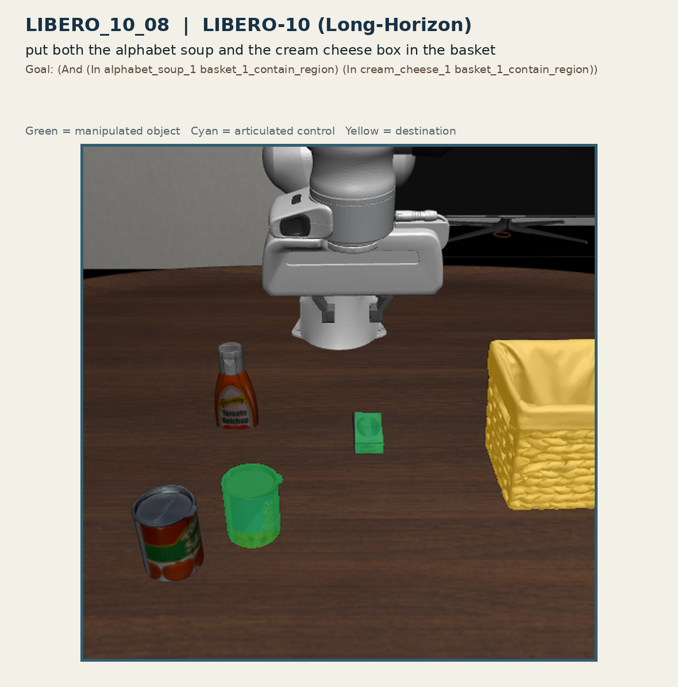
Goal / entities
Goal: (And (In alphabet_soup_1 basket_1_contain_region) (In cream_cheese_1 basket_1_contain_region))
Fixtures: living_room_table - living_room_table
Objects: alphabet_soup_1 - alphabet_soup; cream_cheese_1 - cream_cheese; tomato_sauce_1 - tomato_sauce; ketchup_1 - ketchup; basket_1 - basket
BDDL: LIVING_ROOM_SCENE1_put_both_the_alphabet_soup_and_the_cream_cheese_box_in_the_basket.bddl
Mask pixels: {"goal_destination_02": 17664, "manipulated_object_01": 4205, "manipulated_object_03": 1093}
LIBERO_10_09
LIBERO-10 (Long-Horizon)
put both moka pots on the stove
Masked interaction: moka_pot_1 (green); flat_stove_1 (yellow); moka_pot_2 (green); flat_stove_1_button (cyan)
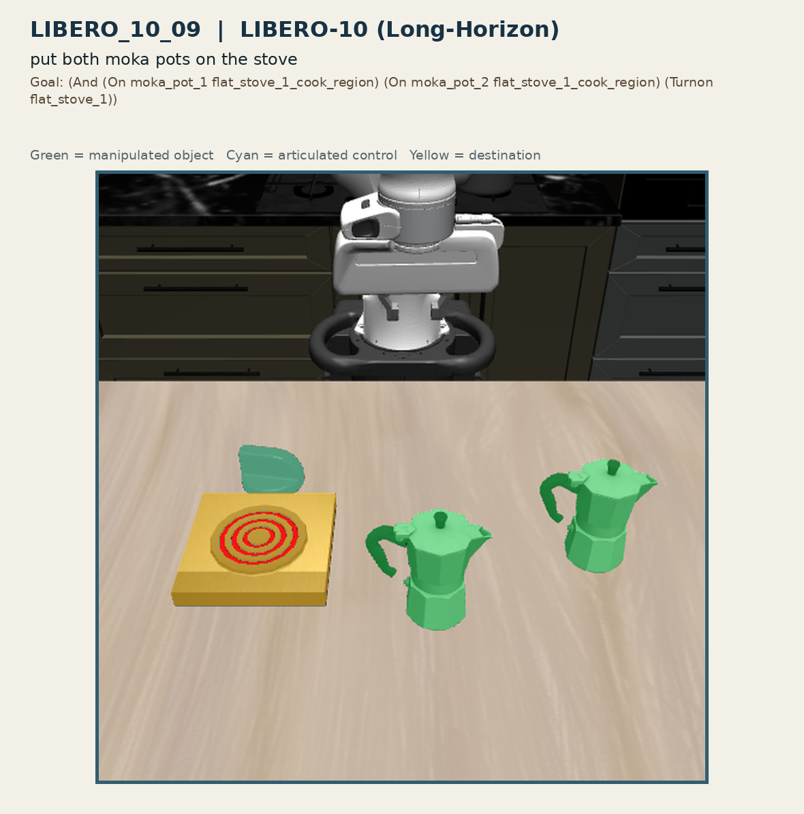
Goal / entities
Goal: (And (On moka_pot_1 flat_stove_1_cook_region) (On moka_pot_2 flat_stove_1_cook_region) (Turnon flat_stove_1))
Fixtures: kitchen_table - kitchen_table; flat_stove_1 - flat_stove
Objects: moka_pot_1 moka_pot_2 - moka_pot
BDDL: KITCHEN_SCENE8_put_both_moka_pots_on_the_stove.bddl
Mask pixels: {"goal_destination_02": 12353, "interaction_control_04": 1923, "manipulated_object_01": 5121, "manipulated_object_03": 5742}
LIBERO_10_10
LIBERO-10 (Long-Horizon)
put the yellow and white mug in the microwave and close it
Masked interaction: white_yellow_mug_1 (green); microwave_1 (cyan)
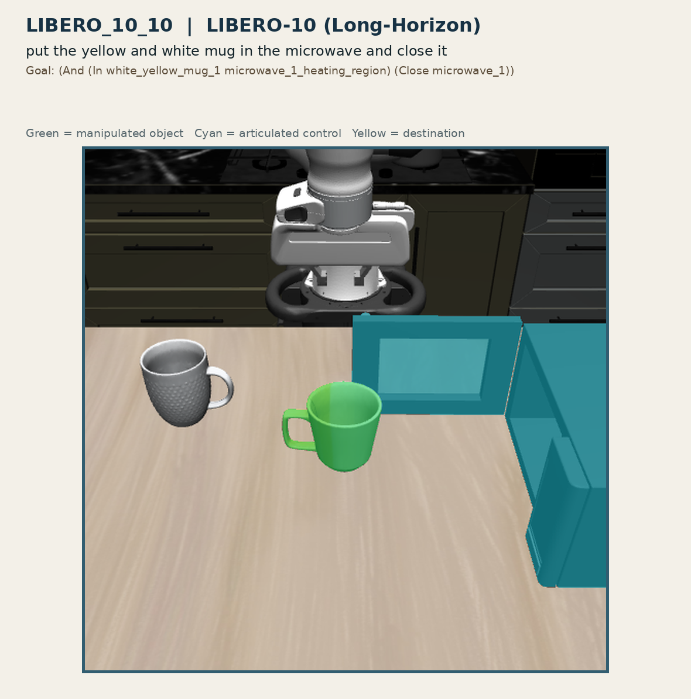
Goal / entities
Goal: (And (In white_yellow_mug_1 microwave_1_heating_region) (Close microwave_1))
Fixtures: kitchen_table - kitchen_table; microwave_1 - microwave
Objects: porcelain_mug_1 - porcelain_mug; white_yellow_mug_1 - white_yellow_mug
BDDL: KITCHEN_SCENE6_put_the_yellow_and_white_mug_in_the_microwave_and_close_it.bddl
Mask pixels: {"interaction_control_02": 36279, "manipulated_object_01": 5538}
{kind=link}
{kind=link}
{kind=link}
{kind=link}